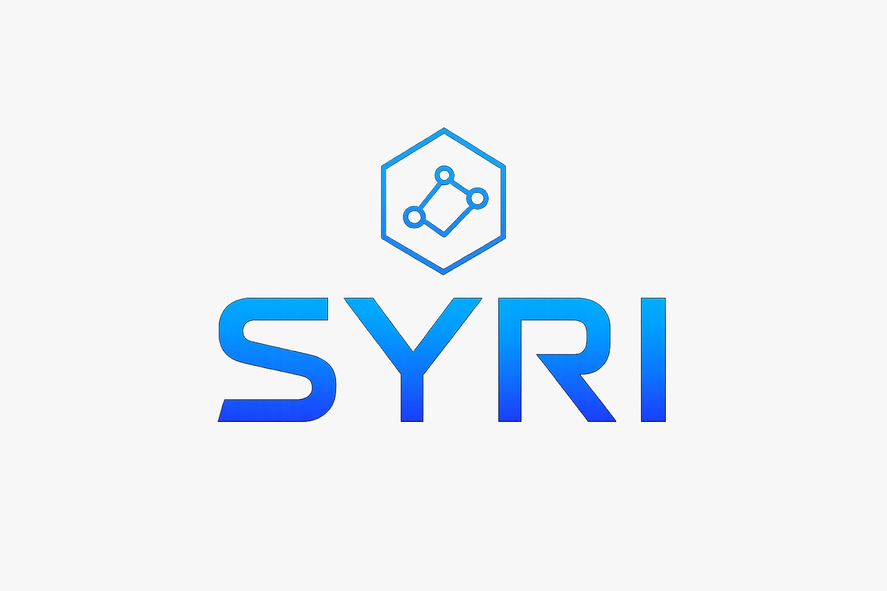

We build autonomous systems that perceive, reason, and act in the physical world. Starting with a robot dog that sees what you can't.
Our projects live at the edge — where data meets the physical world and milliseconds matter.
From drop-in to full autonomy in three steps.
Our dashboard streams real-time data from every deployed unit. Battery, position, threat level, environment — all in one feed.
We're onboarding pilot partners now. Drop your email and we'll reach out.